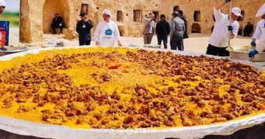
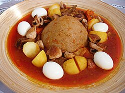
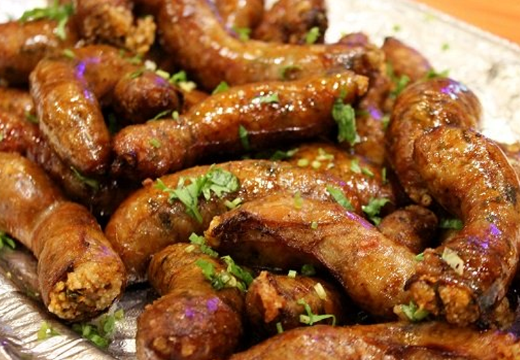
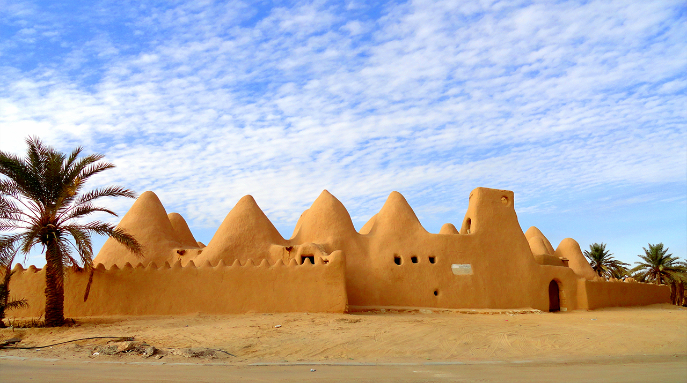
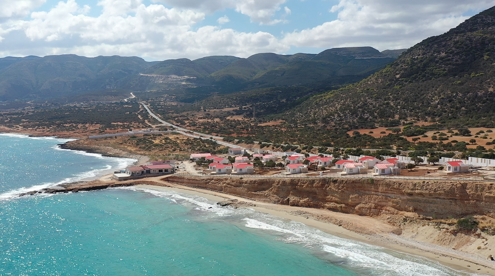

الكسكسي
طبق احتفالي حاضر في المائدة الليبية بطرق متعددة.
الثقافة الليبية جزء أساسي من التجربة السياحية، حيث تمتزج الضيافة والعادات والمطبخ والحرف واللباس التقليدي في صورة تعكس أصالة المجتمع الليبي.
المطبخ الليبي بوابة دافئة لفهم البيت والمدينة والواحة.

طبق احتفالي حاضر في المائدة الليبية بطرق متعددة.

أحد أشهر الأطباق التقليدية ومرتبط بالضيافة والمناسبات.

طبق شعبي غني بالنكهة والحضور الاجتماعي.

طقس ضيافة يومي يختصر كرم البيت الليبي.

مذاق الواحات ورفيق القهوة والشاي والمناسبات.

أطباق بحرية ومتوسطية تعكس تنوع المدن الساحلية.
الضيافة واللباس والموسيقى والحرف تعطي التجربة السياحية معناها الإنساني.
ترحيب ومشاركة الطعام والشاي والقهوة في المناسبات واليوميات.
أزياء محلية تعكس تنوع المناطق والمناسبات.
إيقاعات وفنون شعبية مرتبطة بالفرح والذاكرة.
تفاصيل جمالية تحفظ مهارات الحرف والرموز الاجتماعية.
طقوس عائلية ومجتمعية تجعل الزائر قريبًا من الناس.
فخار ونسيج ومشغولات تعكس هوية المدن والواحات.
أمثلة قابلة للتطوير ضمن روزنامة سياحية وطنية.
احتفاء بالواحة والعمارة والموسيقى والضيافة.
مناسبة للتعرف على الواحات والمنتجات المحلية.
ذاكرة الجنوب ومسارات التاريخ الصحراوي.
مواسم اجتماعية وثقافية في عدة مدن ومناطق.
منتجات الواحات ومذاق الصحراء.
مساحة للزيارات التعليمية والأسواق المحلية.
اكتشف ليبيا من خلال ثقافتها ومذاقها وكرم أهلها.
خطط تجربة ثقافية